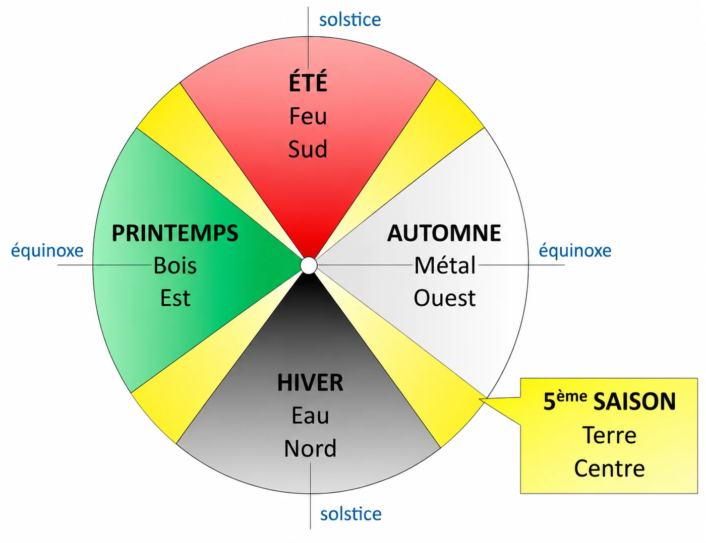

Des séances préventives à chaque nouvelle saison, pour préparer le corps aux énergies de la saison à venir et renforcer le système immunitaire.
« En médecine chinoise, le meilleur soin est celui qui prévient le déséquilibre. »
En Médecine Traditionnelle Chinoise, l’année est rythmée par 5 saisons énergétiques : le printemps, l’été, l’automne, l’hiver et l’intersaison. Chacune est associée à un élément, un climat et à une paire d’organes (yin et yang), qui sont alors particulièrement sollicités.
La MTC est une médecine préventive dont l’objectif est de préserver l’équilibre de l’organisme avant l’apparition des troubles. Les équilibrages énergétiques saisonniers permettent de soutenir les organes au moment où ils en ont le plus besoin, afin de favoriser leur bon fonctionnement et renforcer les capacités naturelles du corps.
Chaque séance associe différentes techniques de la Médecine Traditionnelle Chinoise selon vos besoins : acupuncture, massage Tui Na, moxibustion, ventouses, réflexologie plantaire, auriculothérapie et huiles essentielles adaptées à la saison.
Prendre Rendez-vous
Une approche idéale pour prendre soin de sa santé tout au long de l’année et découvrir les bienfaits de la Médecine Traditionnelle Chinoise.
Ces séances peuvent être réalisées tout au long de la saison, ou dès l’apparition des premiers déséquilibres. À titre préventif, elles sont particulièrement recommandées dans les 20 jours entourant les équinoxes, les solstices et les périodes d’intersaison.
Séance d'environ une heure, au cabinet à Hyères, sur rendez-vous uniquement. Consulter les tarifs.
Prendre Rendez-vous